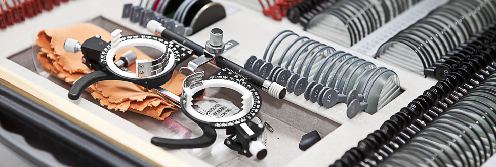

Chirurgia refrattivaLa chirurgia refrattiva è una tecnica chirurgica che viene usata per correggere i difetti della vista, intervenendo sulla cornea, dovuti ad un difetto di focalizzazione delle immagini sulla retina. Tali difetti possono essere la miopia, l’ipermetropia e l’astigmatismo (a seconda che l’immagine sia focalizzata davanti o dietro la retina o sdoppiata). Questi difetti, la cui entità viene espressa in diottrie e, nel caso dell’astigmatismo, anche da un asse, possono essere corretti ricorrendo a diverse tipologie di intervento. Si può optare tra chirurgia corneale (PRK e LASIK) o chirurgia intraoculare. Questi deficit visivi possono essere normalmente corretti senza rischi con l’uso di occhiali e/o lenti a contatto. L’intervento chirurgico è generalmente consigliato solo quando tali strumenti non sono ben sopportati o in presenza di difetti molto sbilanciati tra un occhio e l’altro, in casi di intolleranza alle lenti, o attività lavorative dove l’uso di lenti costituisca un problema (ad esempio l’aviazione, l’attività sportiva, ecc.). Il valore ed il tipo del difetto vengono misurati durante un’apposita visita preoperatoria con la misurazione della vista, la correzione refrattiva, la topografia corneale, lo spessore corneale, il diametro pupillare e la simulazione del risultato finale. L’intervento è definitivo, ma richiede un periodo di assestamento di qualche mese. Sebbene la capacità visiva migliori sempre, talvolta può permanere un piccolo residuo refrattivo. Nel caso il risultato ottenuto non fosse soddisfacente, si può ricorrere ad un intervento correttivo successivo. È possibile richiedere un appuntamento con il dottor Garzione presso una delle nostre sedi ai seguenti contatti:
Sede di Roma +39 06 3728555 Sede di Salerno +39 0974.62397 |

Chirurgia refrattivaFemto-laserQualità della visione